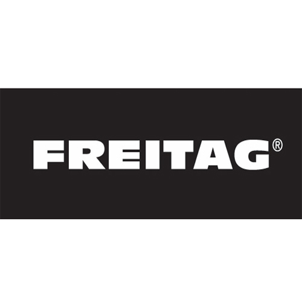
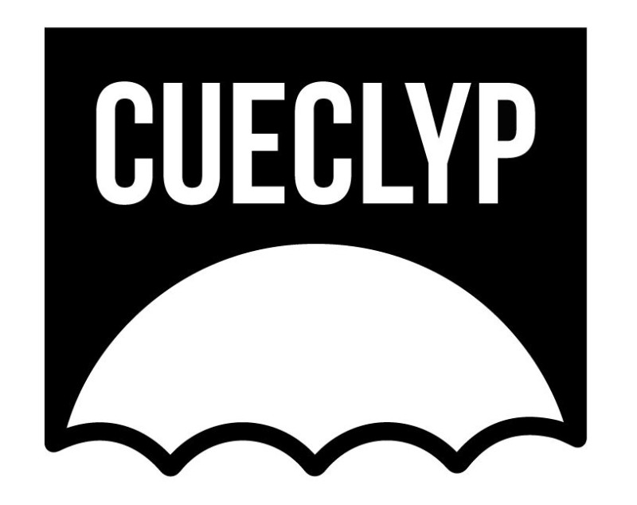
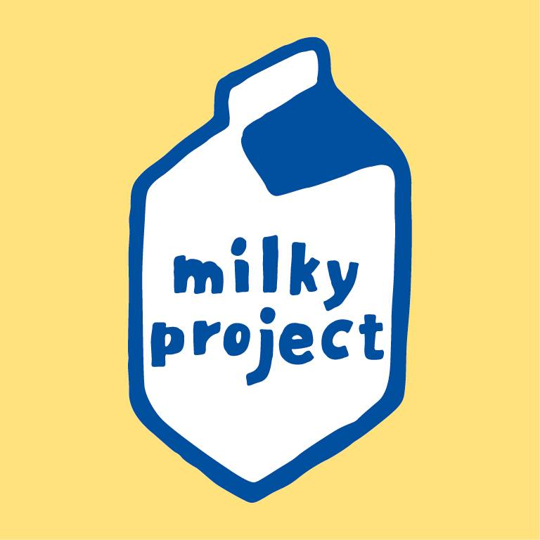

오래된 트럭의 방수천 자전거 방수포, 튜브, 오래된 안전벨트 같이
다양한 것들을 가방으로 업사이클링하여 판매한다.
주로 방수포로 작업을 하기에 방수가 가능하여 실용성도 높이 평가된다.

버려진 우산천을 업사이클해서 지갑이나 파우치를 만든다.
우산천은 방수가 된다는 장점이 있기에 실용적으로 사용할 수 있다.
현재는 건물 외벽 현수막이나 친환경 소재인 타이백들도 활용하고 있다.

버려진 우유곽을 업사이클링 하여 카드지갑을 제작한다.
국내 기업이지만 각국의 우유곽으로 제작하기에 많은 사랑을 받고 있다.
물에 젖지 않는 특성을 가지고 있어 실용도도 높다.

재활용 플라스틱을 사용하여 옷을 만들어 판매한다.
또한, 필요없는 옷을 사지말라는 광고를 함께하고 있다.
자신들의 제품도 필요없으면 사지말라고 광고를 하고 있다.